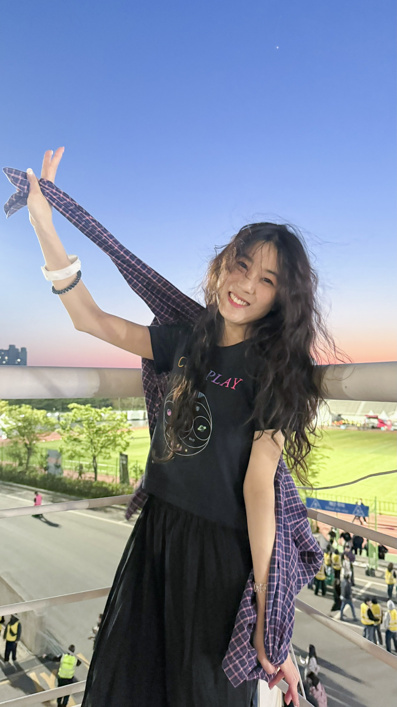

Han Yunji
안녕하세요. 저는 풀스택 개발자를 꿈꾸는 한윤지입니다.
코드로 무언가를 직접 만들어내는 과정에 매력을 느껴 웹 개발을 시작했습니다. HTML부터 차근차근 배우며, 사용자에게 편한 화면을 만드는 개발자가 되는 것을 목표로 하고 있습니다.
profile
- MBTI: INFJ
- 별자리: 쌍둥이자리
- 취미: 영화감상
like
- 영화: 비긴 어게인
- 음식: 떡볶이
- 여행지: 유럽
goal
- 단기: 프론트엔드 기초 익히기
- 장기: 사용자 경험을 중시하는 풀스택 개발자 되기